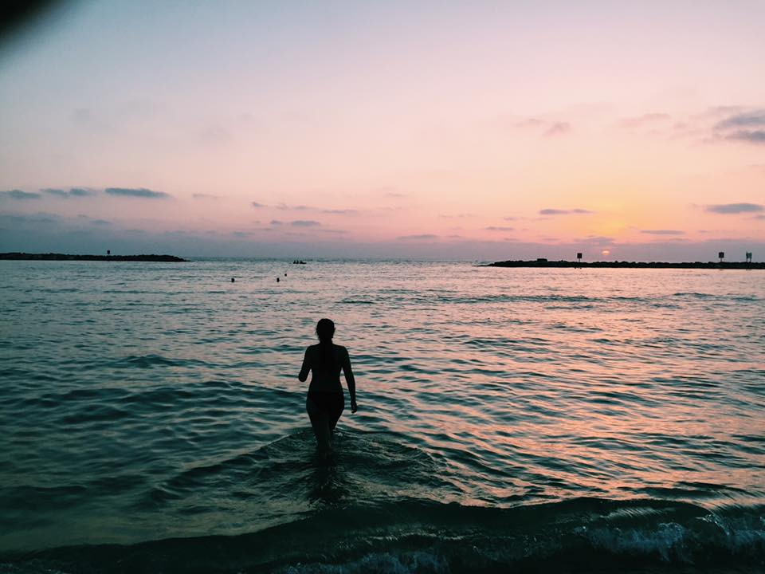

id"name"> Lauren Mokhtarzadeh
Contact Me:
Lauren Mokhtarzadeh
lm@aol.com
Champ de Mars, 5 Avenue Anatole France,
75007 Paris, France
Photo:

Sunset by S.M.
About me:
Student studying Communications- learning to code, design, and write for the digital age.
Work Experience:
- Student Ambassador (August 2011-2017)
- Babysitter (2014-present)
- Social Media Intern (January 2016- May 2018)
- Intern at Law Office (May 2016-August 2018)
Click here to learn more about my previous work.
- School Newspaper Section Editor (May 2016-June 2017)
Click here to read my articles.
- Student Council (May 2016-June 2017)
- Freshman Mentoring Program (August 2016- June 2017)
- Sunday School Teacher (August 2016-January 2018)
Hobbies/Skills:
| Activity |
To-From |
| Kickboxing |
(2016-present) |
| Art |
(2010-present) |
| Basketball |
(2007-2015) |
| Volleyball |
(2008-2015) |
| Piano |
(2009-2016) |